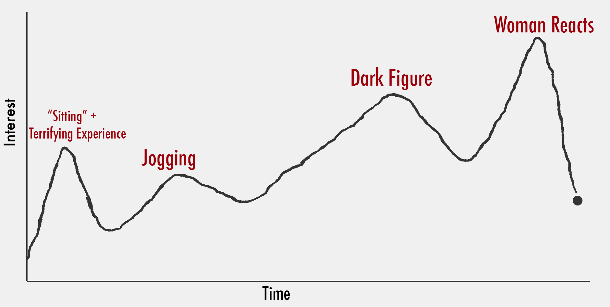
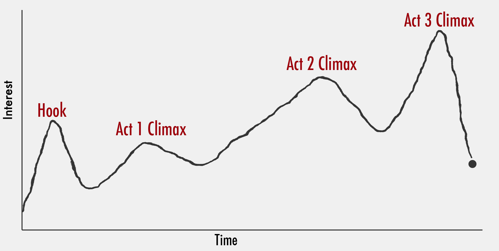
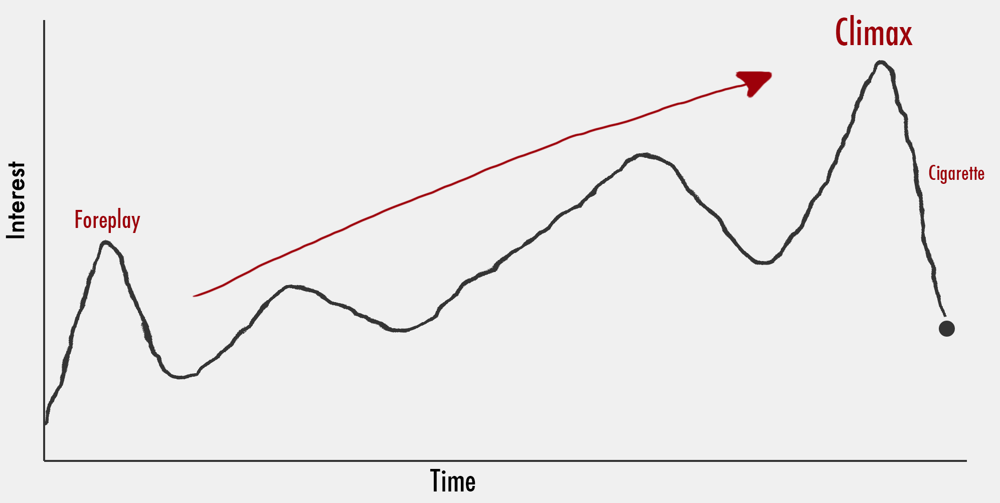
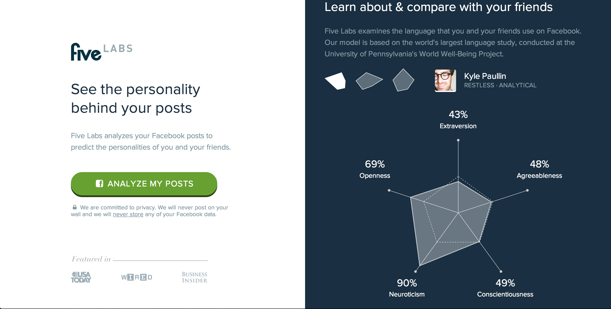
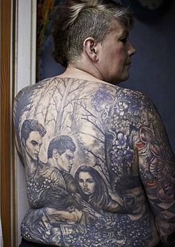
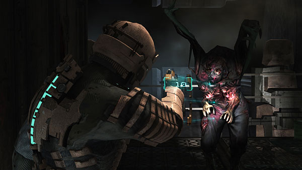
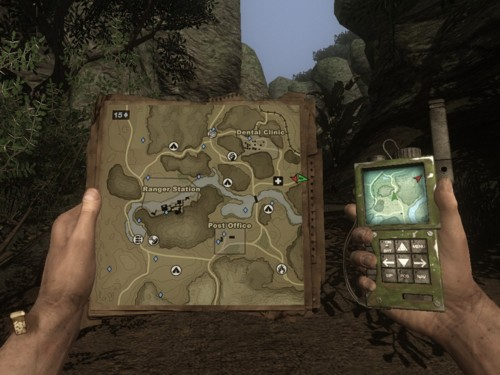
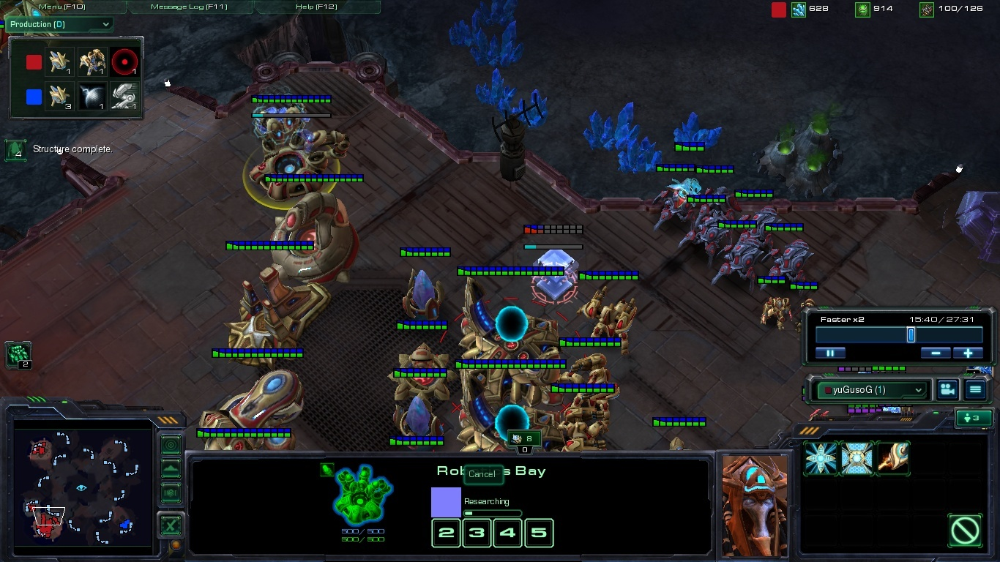
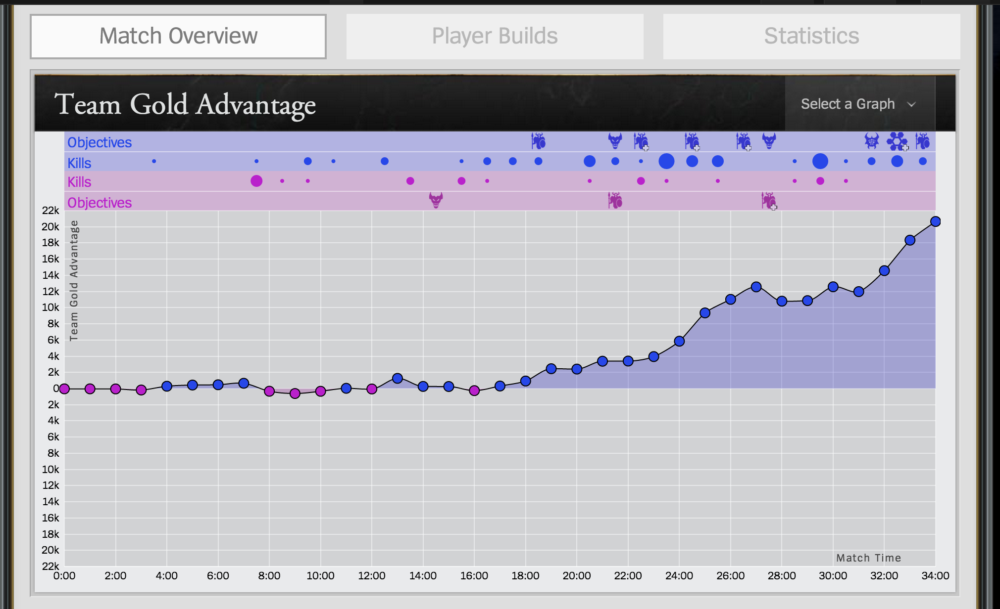
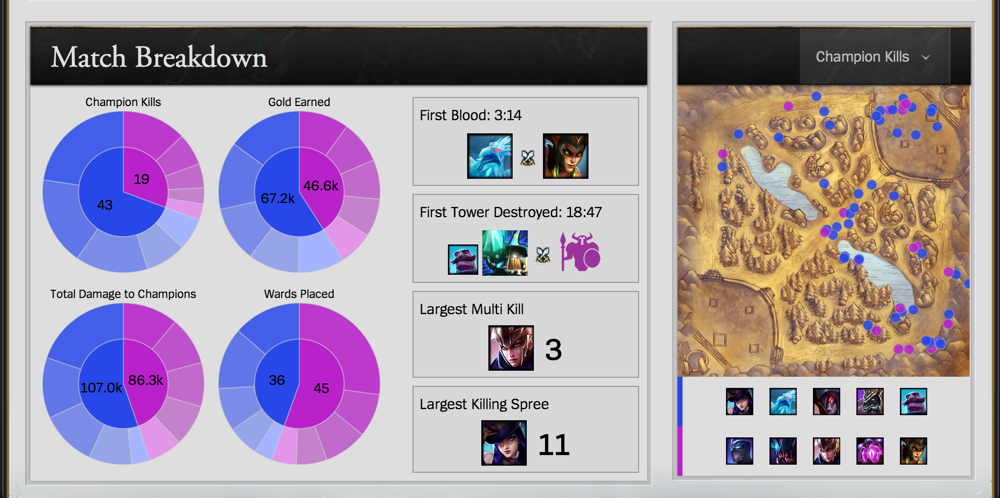

Crafting Experiences
with Data Visualization
Experience: Visualized

Books and Movies

Physical Interest Curve

How to Craft Experiences
Misdirection
Loading bars do not have to visualize loading1. Adding Loading Bars
Outline.com
Demo
2. Exploit Existing Loading Bars
labs.five.com
Five Labs Demo
SVG Filters
Techniques for Crafting Experiences
Right vs. Happy
Chartjunk does not achieve the goals of its propagators. The overwhelming fact of data graphics is that they stand or fall on their content, gracefully displayed.
-Edward Tufte

#filter
Make your audience happyLying with data is never ok

Examples
Hand Drawn Charts
Add some flavor
Filter
Guild Wars Visualization
Original Source

InkScape
Games
Design as a Search Problem
Look at games for inspirationData Viz Can Improve Game Experiences
Status Visualizations
Diegetic vs. Non-DiegeticDeadSpace
FarCry
Data Viz can Help Improve Skill
Training Visualizations
No learning = No FunStarcraft 2
Leauge of Legends
 Data Viz-Driven Game Design
Epitaph
- Powered by D3
- Immersive Status Visualizations
- Training Visualizations to Improve Skill